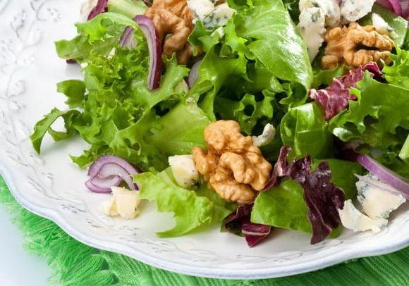

<div ng-controller="homeCtrl" >
    <div class="flex">
        <div id="imgHome" ></div>
        <div id="textHome">
            Veganská restaurace je zaměřena na zdravé stravování lidí.
            Nabízíme 100% veganskou kuchyni včetně raw jídel. Při vaření
            používáme bio poraviny a kvalitní bio oleje, lisované za studena.
            Příjemný personál vám rád poradí s výběrem jídla dle vašich
            požadavků. Pondělí až pátek nabízíme polední menu, které zahrnuje
            polévky a hotová jídla. Těšíme se na vaši návštěvu!
            <!--h4>Nabízíme: </h4>
            <h5>Polední menu v době 11:00 - 15:00</h5>
            <h5>Jídla s sebou</h5>
            <h5>Možnost rezervace stolu</h5>
            <h5>Besplatne Wi-Fi připojení</h5>
            <h5>Nekuřácké prostředí</h5-->

            <div class="kontakt">
                <h4>
                    <br />
                    <b>Otevírací doba</b>
                    <h5 ng-repeat="w in week" ng-class="{openToday: today.getDay() == w.id}">
                        {{w.day}}: &nbsp; {{w.from}} - {{w.to}}
                    </h5>
                </h4>
            </div>
        </div>

    </div>
</div>